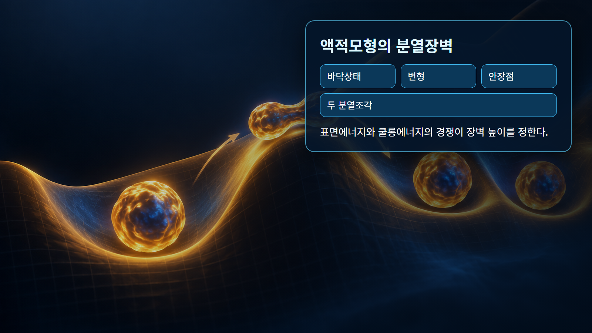

핵물리 기초 · 014
액적모형
원자핵의 집단적 결합과 변형을 전하를 띤 액체방울처럼 설명하는 모형
액적모형은 개별 핵자의 궤도보다 많은 핵자가 함께 움직이는 집단적 성질에 초점을 둡니다. 핵력이 가까운 이웃을 묶는 포화성과 핵 표면의 에너지 비용이 액체방울의 응집·표면장력과 닮았다는 점을 이용합니다. 쿨롱 반발과 중성자-양성자 불균형도 별도 항으로 더합니다.
개념 정의
액적모형은 개별 핵자의 궤도보다 많은 핵자가 함께 움직이는 집단적 성질에 초점을 둡니다. 핵력이 가까운 이웃을 묶는 포화성과 핵 표면의 에너지 비용이 액체방울의 응집·표면장력과 닮았다는 점을 이용합니다. 쿨롱 반발과 중성자-양성자 불균형도 별도 항으로 더합니다.
액적모형의 개념 정의에서는 이 개념은 하나의 그림이나 비유만으로 고정되지 않습니다. 액적모형의 개념 정의에서는 양성자수와 중성자수, 에너지 준위, 계의 경계를 함께 정하고 어떤 관측량을 설명하려는지 먼저 구분해야 합니다. 액적모형의 개념 정의에서는 같은 핵에서도 바닥상태와 들뜬상태의 구조가 다를 수 있습니다.
작동 원리
반경은 대략 R=r₀A^(1/3)로 커지고, 부피항은 핵자를 묶으며 표면항은 이웃이 적은 표면 핵자의 결합 손실을 나타냅니다. 쿨롱항은 양성자 반발, 비대칭항은 중성자와 양성자 수 차이, 쌍항은 짝지음 효과를 보정합니다. 변형이 커지면 표면에너지와 쿨롱에너지의 균형이 달라집니다.
액적모형의 작동 원리에서는 원리식은 물리적 방향과 크기척도를 제공하지만 실제 핵종의 수치는 질량·준위·반응 자료로 확인합니다. 액적모형의 작동 원리에서는 보존법칙을 먼저 적용하고, 모형이 생략한 잔류상호작용과 집단효과가 필요한 정밀도인지 판단합니다.
단계별 계산과 상황 예시
예시 1｜r₀=1.2 fm, A=64를 넣으면 A^(1/3)=4이므로 R≈4.8 fm입니다. A=8배인 512라면 반지름은 2배가 됩니다. 핵자수는 8배여도 반지름은 세제곱근만큼 늘어 핵밀도가 대체로 일정하다는 해석이 가능합니다.
예시 2｜구형 핵이 늘어나 두 엽을 만들면 표면적이 증가해 표면에너지는 불리해집니다. 그러나 양전하 중심이 멀어져 쿨롱 반발에너지는 낮아질 수 있습니다. 무거운 핵에서 외부 중성자 흡수로 들뜸에너지가 더해지면 이 장벽을 넘어 핵분열로 이어질 수 있습니다.
| 구분 | 대표 조건 | 해석 |
|---|---|---|
| 부피항 | 결합 증가 | 내부 핵자의 가까운 이웃 |
| 표면항 | 결합 감소 | 표면 핵자의 이웃 부족 |
| 쿨롱항 | 결합 감소 | 양성자 반발 누적 |

원자력공학의 실제 적용
반경·질량·평균 결합에너지의 체계적 경향과 핵분열장벽을 설명할 때 유용합니다. 원자로 핵분열 에너지, 생성물 질량분포와 변형 경로를 이해하는 첫 모형이며, 거시-미시 핵질량모형에서도 액적항을 바탕으로 껍질 보정을 더합니다.
액적모형의 원자력공학의 실제 적용에서는 예비평가에서는 대표값으로 경향을 확인하고 상세평가에서는 핵종·에너지·온도에 맞는 평가자료를 사용합니다. 액적모형의 원자력공학의 실제 적용에서는 결과에는 입력값, 단위, 자료 버전, 중간 계산과 적용범위를 함께 기록합니다. 액적모형의 원자력공학의 실제 적용에서는 계산과 측정이 다르면 입력자료, 계의 경계, 누락된 상태나 반응경로 순으로 추적합니다.
오해와 적용 한계
핵은 실제 액체가 아니며 점도와 표면장력을 그대로 넣는 고전 유체도 아닙니다. 액적모형은 마법수와 개별 준위, 홀수-짝수 핵의 세부 구조를 충분히 설명하지 못합니다. 집단적 경향에는 강하지만 정밀값은 껍질모형과 실험자료를 함께 사용합니다.
액적모형의 오해와 적용 한계에서는 이미지는 핵자와 힘을 눈에 보이게 확대한 개념 표현이며 실제 크기·거리·시간 비율이 아닙니다. 액적모형의 오해와 적용 한계에서는 비유가 양자상태를 고전 궤적으로 바꾸지 않도록 주의하고, 정량 결론은 핵종별 실험자료와 불확실성을 포함해 판단합니다.
핵심 정리
액적모형은 핵의 집단적 경향과 개별 양자상태를 구분해 읽는 출발점입니다. 액적모형의 핵심 정리에서는 정의와 작동 원리를 확인한 뒤 두 예시처럼 입력·단위·계산·해석을 나누면 공식이 설명하는 범위가 선명해집니다. 액적모형의 핵심 정리에서는 실제 적용에서는 서로 다른 모형의 강점과 한계를 비교하고 검증된 핵자료로 수치를 보완합니다.
액적모형의 핵심 정리에서는 검토자는 값이 그럴듯한지만 보지 않고 보존법칙, 차원, 극한조건을 독립적으로 검사합니다. 액적모형의 핵심 정리에서는 자료가 없는 영역의 보간과 외삽을 구분하며, 불확실성이 설계판단에 미치는 민감도를 함께 제시해야 합니다. 액적모형의 핵심 정리에서는 서로 다른 모형이 같은 관측량을 설명할 때에는 계산값뿐 아니라 가정, 필요한 입력자료와 적용 가능한 핵종 범위를 같은 표에서 비교합니다.